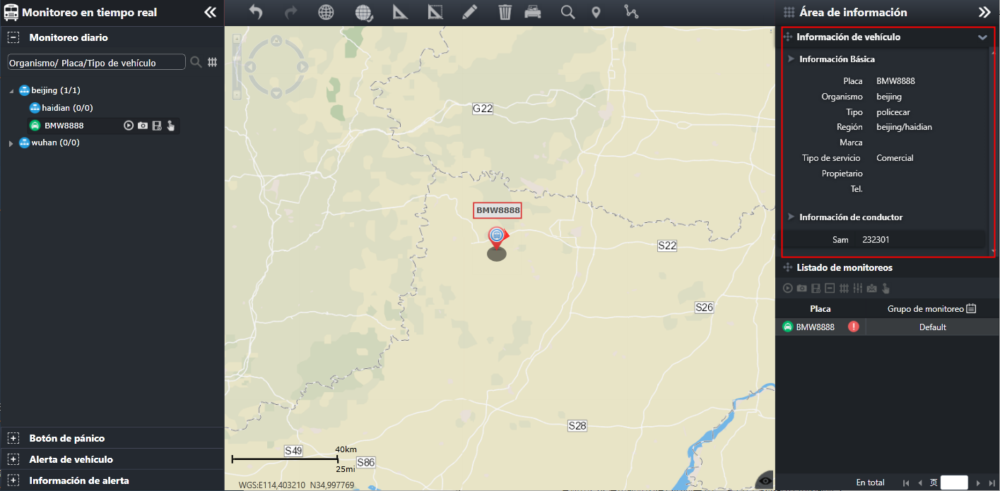

Ver la información del vehículo
Pueda ver la información de vehículo de monitoreo.
Vea la información de vehículo por el área de información.
Expanda el árbol de organización en la interfaz principal de monitoreo diario, seleccione el vehículo de monitoreo y el sistema
muestra la información del vehículo que se va a ver en la ventana del área de información, como se muestra en la siguiente
figura.

Fig 23 Información básica de vehículo
El área de información básica muestra información básica del vehículo, incluyendo: número de matrícula, nombre de la organización,
tipo de vehículo, división administrativa, etc.
El área de información del conductor muestra información relacionada con el conductor, incluido el nombre del conductor y
el número de contacto.
Vea los detalles del vehículo en el mapa GIS.
| 1. | Seleccione el vehículo en el árbol de organización de la interfaz principal de monitoreo diario, y el sistema muestra la ubicación del vehículo seleccionado en el centro del mapa GIS. |
| 2. | El mouse se desliza sobre el ícono del vehículo en el mapa GIS, y el botón de operación del vehículo se muestra automáticamente
arriba el ícono, y la información detallada del vehículo se muestra de manera burbujeante.
Fig 24 Los detalles de vehículos |
| 3. | Haga clic en el ícono 〖〗 en el extremo izquierdo del botón de operación para fijar la ventana de información detallada del vehículo. El botón de operación
cambia al ícono , asegurando que la ventana de información detallada arriba no desaparecerá después de que el mouse se vaya. Los detalles del vehículo incluyen: número de matrícula, longitud, latitud, velocidad, dirección, tiempo de posicionamiento,
etc.
|